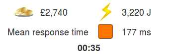

-
Response time
-
Demand
Total cost
-

£0 
0 J Mean response time
-
Load
-
Provisioning
-
£0 /s 0 W
|
£0 | |
0 J |
| Mean response time | |||
|
£0 /s |
|
0 W |

Chances are, you use the Cloud every day – every time you check Facebook, watch a video on YouTube, or store a file in Dropbox.
But what is the Cloud, really, and how does it work?
Click Next to learn about the Cloud, or Skip intro to go straight to the simulator.

Websites like Google, Facebook, and YouTube are always on, accessible everywhere, and almost never fail. They are also super-fast, even though they are some of the busiest sites in the world. The Cloud is the technology that makes this possible.
When you use these sites, you don’t need to think about where they are in the world, or how they manage to handle so many users at once. They just work! That’s what makes the Cloud so useful.
But the Cloud is a clever illusion. Behind the scenes, there’s a lot going on. Click Next to start learning how the cloud works.

This photo shows the inside of a data centre (this one belongs to Google). It’s a huge building full of computers called servers, because they serve up web pages that you ask for. Think of a waiter or waitress in a restaurant – you tell them what you want, and they serve it to you! When you search on Google, your computer tells a server what you want, and the server finds it, and serves it to you.
In the old days (the early 1990s), most websites would just have one server each. But if the website was really popular, even the best servers would become overloaded, and it would take a long time for pages to load – or the site might stop working altogether. Everything was slow in the 90s anyway, and this just made things worse!
Click Next to find out how the Cloud solves this problem.
Instead of using one server, websites running in the Cloud can use as many servers as they need to stay fast – and they do it automatically. If more users access the site, a special program running in the data centre will give the site more servers to use. Using more servers is called provisioning.
But running servers is expensive – both in terms of money and power – so if users go away, the website will give the servers up again, and go back to using less. This happens all the time, without the users ever knowing. They just see that the site remains fast.
Sometimes servers stop working. By using slightly more servers than it needs, a site can make sure it is still fast and accessible even if some of the servers fail. This is called fault tolerance.
A busy popular website could be using thousands of servers in data centres all over the world, all at the same time!
Click Next to learn about the resources websites need.
The Cloud provides three essential resources:
Computation – processors to run programs.
Connectivity – network connections between servers.
Storage – hard disks and SSDs to store data on.
Each has a different cost, and uses a different amount of energy. Different websites also have different needs. For example, a video site like YouTube needs a lot of connectivity to serve huge videos quickly. But something like Facebook, which is mainly text and images, doesn’t need as much.
So, managing the Cloud is a balancing act between giving websites the resources they need, and not using too much money and energy.
Click Next to see how the Cloud Simulator lets you take control of this balancing act!
After you click Finish, you will see two sets of sliders.
The sliders on the left let you control how many people are using each of the sites. The response time is how long it takes for the site to respond when you click on something – lower is better! Keep the box green to keep your users happy.
The sliders on the right let you control how many resources the Cloud allocates. The load boxes show how hard the servers in the Cloud are working – if they are red, then things will be slow and the users will get annoyed!
Try adjusting both sets of sliders and see how the packets moving across the network respond. If the load on the Cloud is high, it will take a long time to respond to the users. Increase the resources allocated, and things speed up again. But keep an eye on the total cost, too. The more resources you allocate, the faster the cost goes up.
Click Finish to go to the Cloud Simulator.
In this mode, you can set the number of people using each website by moving the sliders on the left, and watch how the Cloud responds.
Like in real life, the Cloud tries to provision just enough resources to keep the websites running fast, without wasting money or energy. But sometimes equipment fails – and it must be replaced quickly before the users notice!
In this mode, you are in control of the provisioning sliders on the right. Your job is to do what the software managing the Cloud does in real life – to keep the users happy without spending too much money or using too much energy.

When you click Go!, the number of people using each website will change over time. Try to keep the mean response time low to keep them happy. But try to keep the total cost and energy usage low, too, by using only the resources you need. You will see how you did when the timer runs out!